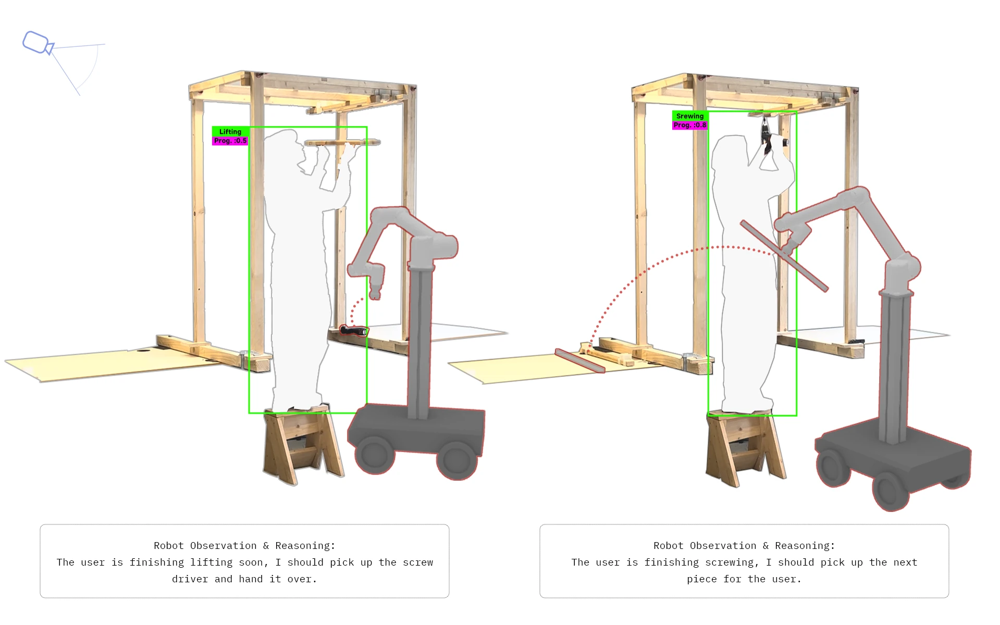
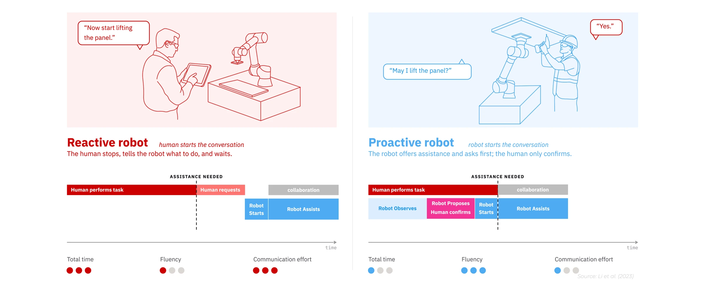
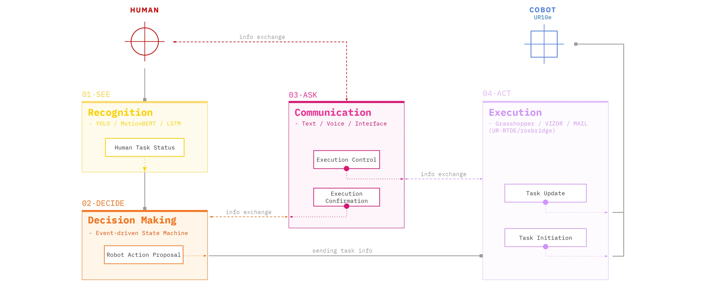
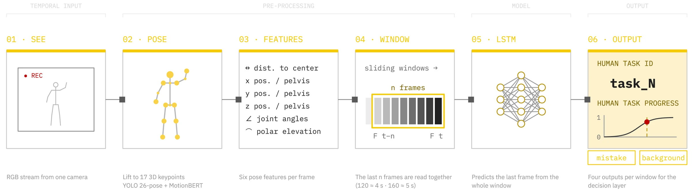
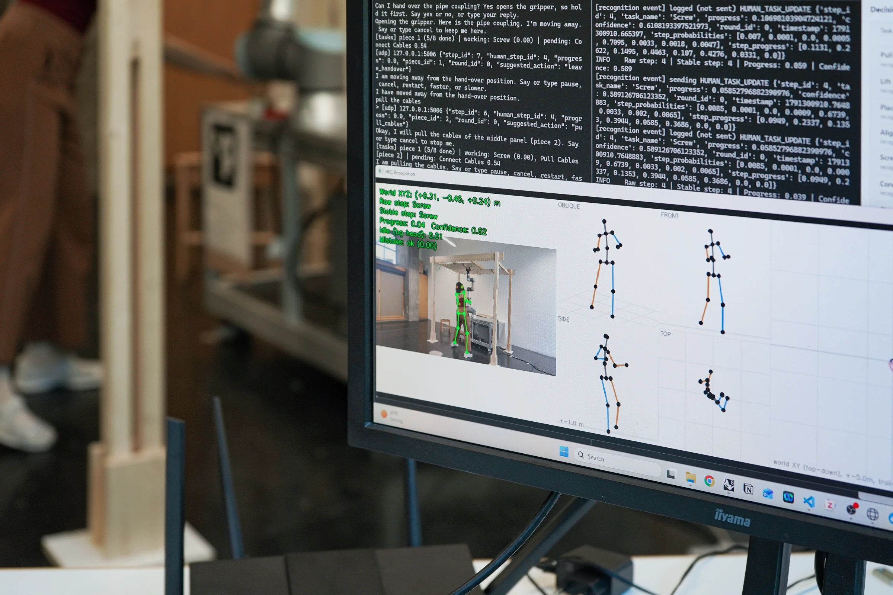
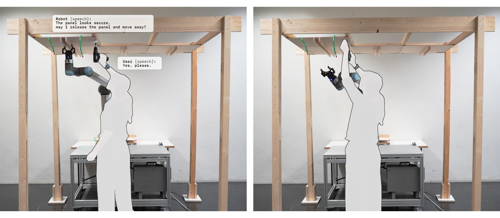
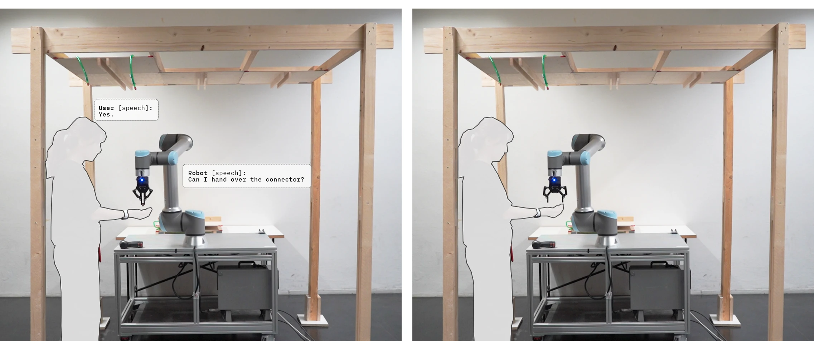

We aim to develop a proactive robot assistance system that can determine when to assist, what to propose, and how to communicate it during the collaborative ceiling assembly task.

Compare to existing reactive HRC, proactive HRC enables the robot to offer timely assistance before being asked, reducing coordination effort and supporting a more fluent workflow.

The proposed proactive HRC system consists of four main capabilities:

Recognition | Decision Making | Communication | Execution
The recognition module is based on a LSTM model that takes in the human's temporal skeleton features and predicts the next action.

3 models with different architectures and configurations were evaluated.


The communication module consists of two parts: before execution and during execution.


Two example cases of communication between the human and the robot via speech are shown below:

